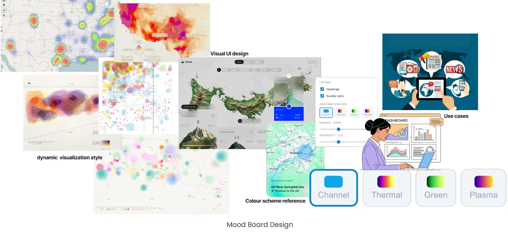
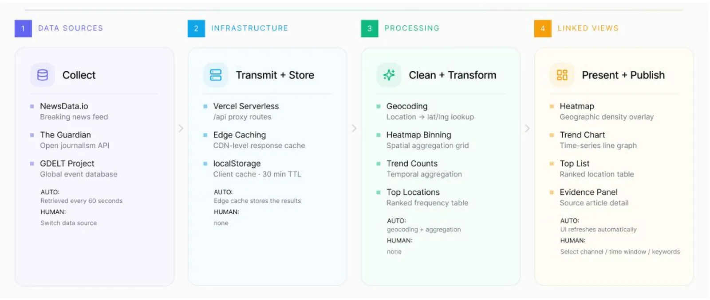
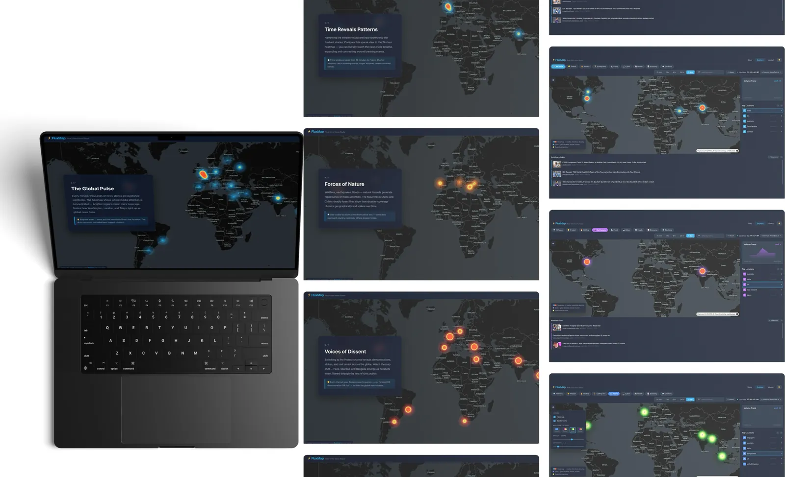

At a glance一览一覽概要En brefAuf einen Blick
- Problem问题問題課題ProblèmeProblem
- News arrives as a firehose of text lists. Lists hide where attention is clustering and how it shifts over time, and most live dashboards break the moment their one data source does.新闻像消防水管一样以文字列表的形式涌来。列表看不出关注度在哪里聚集、又如何随时间变化；而大多数实时仪表盘，只要唯一的数据源一出问题就跟着崩溃。新聞像消防水管一樣以文字列表的形式湧來。列表看不出關注度在哪裡聚集、又如何隨時間變化；而大多數即時儀表板，只要唯一的資料來源一出問題就跟著當掉。ニュースは消防ホースのように、テキストのリストとして押し寄せます。リストでは注目がどこに集まり、時間とともにどう移るのかが見えません。しかも多くのライブダッシュボードは、頼っている唯一のデータソースが落ちた瞬間に止まってしまいます。L’actualité arrive comme une lance d’incendie de listes de texte. Les listes cachent où l’attention se concentre et comment elle évolue, et la plupart des tableaux de bord en direct cassent dès que leur unique source de données tombe.Nachrichten kommen als Flut von Textlisten. Listen verbergen, wo sich die Aufmerksamkeit ballt und wie sie sich mit der Zeit verschiebt – und die meisten Live-Dashboards brechen zusammen, sobald ihre einzige Datenquelle ausfällt.
- Data数据資料データDonnéesDaten
- NewsData.io, The Guardian Open Platform and the GDELT Project, geocoded and aggregated in the browser and refreshed every 60 seconds.NewsData.io、The Guardian Open Platform 和 GDELT Project，在浏览器里完成地理编码与聚合，每 60 秒刷新一次。NewsData.io、The Guardian Open Platform 和 GDELT Project，在瀏覽器裡完成地理編碼與彙整，每 60 秒更新一次。NewsData.io、The Guardian Open Platform、GDELT Project。ブラウザ内でジオコーディングと集計を行い、60 秒ごとに更新。NewsData.io, The Guardian Open Platform et le projet GDELT, géocodés et agrégés dans le navigateur, actualisés toutes les 60 secondes.NewsData.io, The Guardian Open Platform und das GDELT Project, im Browser geokodiert und aggregiert, alle 60 Sekunden aktualisiert.
- Views视图檢視ビューVuesAnsichten
- Heatmap with event dots, volume trend, top locations and article evidence, all driven by one shared state.热力图与事件点、声量趋势、热门地点和文章证据，全部由同一个共享状态驱动。熱力圖與事件點、聲量趨勢、熱門地點和文章證據，全部由同一個共享狀態驅動。イベントのドットを重ねたヒートマップ、ボリュームトレンド、上位の地点、記事のエビデンス。すべて 1 つの共有状態で動きます。Carte de chaleur avec points d’événements, tendance de volume, lieux principaux et articles sources, tous pilotés par un même état partagé.Heatmap mit Ereignispunkten, Volumentrend, wichtigste Orte und Artikel als Belege – alles gesteuert von einem gemeinsamen Zustand.
- Key decisions关键决策關鍵決策主な判断Décisions clésWichtige Entscheidungen
- A five-layer provider chain so the map is never empty; a 60-second cadence tuned to free-tier limits; API keys kept server-side; keyword search that filters locally instead of calling the APIs again.五层数据源链，保证地图永远不空；按免费额度调出来的 60 秒刷新节奏；API 密钥只留在服务器端；关键词搜索在本地过滤，不再重新调用 API。五層資料來源鏈，確保地圖永遠不空；依免費額度調出來的 60 秒更新節奏；API 金鑰只留在伺服器端；關鍵字搜尋在本機篩選，不再重新呼叫 API。地図が決して空にならない 5 層のプロバイダーチェーン。無料枠の上限に合わせた 60 秒の更新間隔。API キーはサーバー側だけに置く。キーワード検索は API を呼び直さずにローカルで絞り込む。Une chaîne de fournisseurs à cinq niveaux pour que la carte ne soit jamais vide ; une cadence de 60 secondes calée sur les limites des offres gratuites ; des clés d’API gardées côté serveur ; une recherche par mot-clé qui filtre localement au lieu de rappeler les API.Eine fünfstufige Anbieterkette, damit die Karte nie leer ist; ein 60-Sekunden-Takt, abgestimmt auf die Limits der Gratis-Tarife; API-Schlüssel bleiben auf dem Server; die Stichwortsuche filtert lokal, statt die APIs erneut aufzurufen.
- Outcome成果成果成果RésultatErgebnis
- A deployed app with three pages (Story, Explore, About), 8 topic channels, 5 time windows and about 4,000 lines of TypeScript, built over 11 commits.一个已上线的应用：三个页面（Story、Explore、About）、8 个主题频道、5 个时间窗口，约 4,000 行 TypeScript，共 11 次提交。一個已上線的應用：三個頁面（Story、Explore、About）、8 個主題頻道、5 個時間窗口，約 4,000 行 TypeScript，共 11 次提交。公開済みのアプリ：3 ページ（Story、Explore、About）、8 つのトピックチャンネル、5 つの時間幅、約 4,000 行の TypeScript、コミット 11 回。Une application en ligne avec trois pages (Story, Explore, About), 8 canaux thématiques, 5 fenêtres temporelles et environ 4 000 lignes de TypeScript, en 11 commits.Eine veröffentlichte App mit drei Seiten (Story, Explore, About), 8 Themenkanälen, 5 Zeitfenstern und rund 4.000 Zeilen TypeScript in 11 Commits.
Context背景背景背景ContexteKontext
The brief was to build a visualization that stays alive: fed by a live source, updating on its own and open to the user’s intervention. I chose the hardest live stream I could think of: world news. Thousands of stories are published every hour, yet they reach us as headlines in a list, with no sense of where things are happening or how attention is moving.
这个项目的要求是做一个“活着”的可视化：接入实时数据源，自己更新，同时允许用户介入。我选了自己能想到的最难的实时数据流——全球新闻。每小时都有成千上万篇报道发布，可它们到我们面前时只是一列标题，看不出事情发生在哪里，也看不出关注度在怎样流动。
這個專案的要求是做一個「活著」的視覺化：接上即時資料來源，自己更新，同時允許使用者介入。我選了自己能想到最難的即時資料流——全球新聞。每小時都有成千上萬篇報導發布，可它們到我們面前時只是一列標題，看不出事情發生在哪裡，也看不出關注度如何流動。
課題は「生きている」ビジュアライゼーションを作ること。ライブのデータソースにつながり、自分で更新され、ユーザーが介入できるものです。私は思いつく限りいちばん難しいライブストリーム、世界のニュースを選びました。毎時間何千もの記事が公開されているのに、私たちのもとにはリストの見出しとして届くだけで、どこで何が起きているのか、注目がどう動いているのかは見えません。
Le brief : construire une visualisation vivante, alimentée par une source en direct, qui se met à jour seule et laisse l’utilisateur intervenir. J’ai choisi le flux le plus difficile que je connaisse : l’actualité mondiale. Des milliers d’articles paraissent chaque heure, mais ils nous arrivent sous forme de titres en liste, sans indication du lieu ni de la façon dont l’attention se déplace.
Die Aufgabe: eine Visualisierung bauen, die lebt – gespeist von einer Live-Quelle, die sich selbst aktualisiert und Eingriffe der Nutzer zulässt. Ich habe mir den schwierigsten Live-Strom ausgesucht, der mir einfiel: die Weltnachrichten. Jede Stunde erscheinen Tausende Meldungen, doch sie erreichen uns als Schlagzeilen in einer Liste, ohne Gefühl dafür, wo etwas passiert oder wie sich die Aufmerksamkeit bewegt.
FluxMap answers one question at a glance: where is the world’s news happening right now, and how is that changing?
FluxMap 用一眼就能看懂的方式回答一个问题：此刻世界的新闻发生在哪里，又在怎样变化？
FluxMap 用一眼就能看懂的方式回答一個問題：此刻世界的新聞發生在哪裡，又在如何變化？
FluxMap が一目で答えるのは、ひとつの問いです。いま世界のニュースはどこで起きていて、それはどう変わっているのか？
FluxMap répond d’un coup d’œil à une seule question : où se passe l’actualité mondiale en ce moment, et comment cela évolue-t-il ?
FluxMap beantwortet auf einen Blick eine einzige Frage: Wo findet das Weltgeschehen gerade statt – und wie verändert sich das?
What already exists已有的产品已有的產品既存のプロダクトCe qui existe déjàWas es schon gibt
I compared four products near this space to find what a map-first news tool could add.
我比较了四个相近的产品，想找出一个以地图为核心的新闻工具还能补上什么。
我比較了四個相近的產品，想找出一個以地圖為核心的新聞工具還能補上什麼。
近い領域にある 4 つのプロダクトを比較し、地図を軸にしたニュースツールが何を加えられるかを探りました。
J’ai comparé quatre produits proches pour voir ce qu’un outil d’actualité centré sur la carte pourrait apporter.
Ich habe vier Produkte aus diesem Umfeld verglichen, um herauszufinden, was ein kartenbasiertes Nachrichtenwerkzeug ergänzen kann.
| Product产品產品プロダクトProduitProdukt | What it does做什么做什麼できることCe qu’il faitWas es macht | Gap不足不足足りない点LimiteLücke |
|---|---|---|
| Google News | Personalised headline aggregator个性化的新闻聚合個人化的新聞彙整パーソナライズされた見出しのアグリゲーターAgrégateur de titres personnaliséPersonalisierter Schlagzeilen-Aggregator | Text lists with no geographic dimension; you can’t see where the hotspots are.只有文字列表，没有地理维度，看不出热点在哪里。只有文字列表，沒有地理維度，看不出熱點在哪裡。テキストのリストだけで地理の次元がなく、ホットスポットの場所が見えない。Des listes de texte sans dimension géographique : impossible de voir où sont les points chauds.Textlisten ohne geografische Dimension – man sieht nicht, wo die Brennpunkte liegen. |
| Liveuamap | Real-time map of conflicts and crises冲突与危机的实时地图衝突與危機的即時地圖紛争や危機のリアルタイム地図Carte en temps réel des conflits et des crisesEchtzeitkarte von Konflikten und Krisen | Focused on conflict, with ads and stability issues; says little about overall attention.过度聚焦冲突，还有广告和崩溃问题；反映不出整体的新闻关注度。過度聚焦衝突，還有廣告和當機問題；反映不出整體的新聞關注度。紛争に偏り、広告やクラッシュの問題もある。ニュース全体の注目度はほとんど分からない。Centré sur les conflits, avec des publicités et des plantages ; dit peu de l’attention globale.Auf Konflikte fixiert, mit Werbung und Abstürzen; sagt wenig über die Gesamtaufmerksamkeit. |
| Google Trends | Popularity of search terms by region and time搜索词在不同地区和时间的热度搜尋詞在不同地區和時間的熱度地域・時期ごとの検索語の人気Popularité des recherches par région et dans le tempsBeliebtheit von Suchbegriffen nach Region und Zeit | Measures searches, not news; there is no way back to the reporting.衡量的是搜索兴趣而不是新闻本身，无法追溯到具体报道。衡量的是搜尋興趣而不是新聞本身，無法追溯到具體報導。測っているのは検索で、ニュースそのものではない。元の報道にはたどれない。Mesure des recherches, pas l’actualité ; impossible de remonter aux articles.Misst Suchanfragen statt Nachrichten; kein Weg zurück zur Berichterstattung. |
| World Monitor | Open-source intelligence dashboard开源的全球情报仪表盘開源的全球情報儀表板オープンソースのインテリジェンス・ダッシュボードTableau de bord de renseignement open sourceOpen-Source-Lagebild-Dashboard | Powerful but complex: hard to deploy and hard to read for non-experts.功能强大但复杂：部署门槛高，普通用户难以看懂。功能強大但複雜：部署門檻高，一般使用者難以看懂。高機能だが複雑。導入のハードルが高く、専門家でないと読み解きにくい。Puissant mais complexe : difficile à déployer et à lire pour un non-spécialiste.Mächtig, aber komplex: schwer aufzusetzen und für Laien schwer zu lesen. |
The opportunity: one view that answers where, a second that answers when, and a path down to the actual articles — so a hotspot can be checked, not just admired. That became the four linked views.
机会在于：一个视图回答“在哪里”，另一个回答“什么时候”，再加一条直通原文的路径，让热点能被核实，而不只是被围观。这就成了后来的四个联动视图。
機會在於：一個檢視回答「在哪裡」，另一個回答「什麼時候」，再加一條直通原文的路徑，讓熱點能被核實，而不只是被圍觀。這就成了後來的四個連動檢視。
狙いは、「どこで」に答えるビューと「いつ」に答えるビュー、そして実際の記事までたどれる道筋。ホットスポットを眺めるだけでなく、確かめられるようにすることです。これが 4 つの連動ビューになりました。
L’occasion : une vue qui répond à où, une autre à quand, et un chemin jusqu’aux articles eux-mêmes, pour qu’un point chaud puisse être vérifié et pas seulement contemplé. C’est devenu les quatre vues liées.
Die Chance: eine Ansicht, die das Wo beantwortet, eine zweite für das Wann und ein Weg hinunter zu den eigentlichen Artikeln – damit man einen Brennpunkt überprüfen und nicht nur bestaunen kann. Daraus wurden die vier verknüpften Ansichten.
Who it’s for为谁而做為誰而做誰のためのツールかPour quiFür wen
Three personas set the bar for speed and depth.
三个用户画像定下了速度和深度的标准。
三個人物誌定下了速度和深度的標準。
3 人のペルソナが、スピードと深さの基準を決めました。
Trois personas ont fixé le niveau d’exigence en vitesse et en profondeur.
Drei Personas legten die Messlatte für Tempo und Tiefe fest.
- Emma, a curious news reader — wants a quick overview without reading dozens of headlines.
- Jordan, a design student — wants to understand how data models and visual encoding produce the shapes on the map.
- Jane, an analyst or journalist — needs a lightweight radar to keep an eye on emerging clusters.
- Emma，好奇的新闻读者 — 想快速了解全局，不想读几十条标题。
- Jordan，设计专业学生 — 想弄懂数据模型和视觉编码是怎样在地图上形成这些形状的。
- Jane，分析师或记者 — 需要一个轻量的“雷达”，盯住正在形成的热点。
- Emma，好奇的新聞讀者 — 想快速掌握全局，不想讀幾十條標題。
- Jordan，設計系學生 — 想弄懂資料模型和視覺編碼是怎樣在地圖上形成這些形狀的。
- Jane，分析師或記者 — 需要一個輕量的「雷達」，盯住正在形成的熱點。
- Emma（好奇心旺盛なニュース読者） — 何十もの見出しを読まずに、ざっと全体をつかみたい。
- Jordan（デザインを学ぶ学生） — データモデルとビジュアルエンコーディングが地図上の形をどう生み出すのかを理解したい。
- Jane（アナリスト／記者） — 生まれつつあるクラスターを見張るための、軽い「レーダー」が必要。
- Emma, lectrice curieuse — veut une vue d’ensemble rapide sans lire des dizaines de titres.
- Jordan, étudiant en design — veut comprendre comment les modèles de données et l’encodage visuel produisent les formes sur la carte.
- Jane, analyste ou journaliste — a besoin d’un « radar » léger pour surveiller les foyers émergents.
- Emma, neugierige Nachrichtenleserin – will einen schnellen Überblick, ohne Dutzende Schlagzeilen zu lesen.
- Jordan, Designstudent – will verstehen, wie Datenmodelle und visuelle Kodierung die Formen auf der Karte erzeugen.
- Jane, Analystin oder Journalistin – braucht ein leichtes „Radar“, um entstehende Cluster im Blick zu behalten.

The setting shaped the layout: mostly a laptop or desktop, with short scanning sessions of 10–60 seconds and longer investigations of 3–10 minutes, often alongside news sites and social media, and sometimes projected in a studio critique.
使用场景决定了布局：大多在笔记本或台式机上，有 10–60 秒的快速浏览，也有 3–10 分钟的深入调查；常和新闻网站、社交媒体一起开着，有时还会在课堂评图时投影出来。
使用情境決定了版面：大多在筆電或桌機上，有 10–60 秒的快速瀏覽，也有 3–10 分鐘的深入調查；常和新聞網站、社群媒體一起開著，有時還會在課堂評圖時投影出來。
使う場面がレイアウトを決めました。主にノート PC かデスクトップで、10〜60 秒のざっと見る使い方と、3〜10 分かけて調べる使い方がある。ニュースサイトや SNS と並べて開かれることが多く、講評の場でプロジェクターに映すこともあります。
Le contexte d’usage a dicté la mise en page : surtout un ordinateur portable ou de bureau, avec de courtes séances de balayage de 10 à 60 secondes et des investigations plus longues de 3 à 10 minutes, souvent à côté de sites d’info et de réseaux sociaux, parfois projeté pendant une critique en atelier.
Der Nutzungskontext prägte das Layout: meist Laptop oder Desktop, kurze Überblicke von 10–60 Sekunden und längere Recherchen von 3–10 Minuten, oft neben Nachrichtenseiten und sozialen Medien – und manchmal per Beamer in einer Studio-Kritik.
User stories and success criteria用户故事与成功标准使用者故事與成功標準ユーザーストーリーと成功基準Récits utilisateurs et critères de réussiteUser Stories und Erfolgskriterien
- “In under 10 seconds, show me where global attention is clustering.”
- “Let me switch to a topic like Protest and see whether it’s local or global.”
- “If a hotspot looks intense, let me check it against a short list of sources.”
- “If a data source fails, still show me something useful — and tell me so.”
- “10 秒之内，告诉我全球的关注点聚集在哪里。”
- “让我切换到 Protest 这样的主题，看看它是局部现象还是全球现象。”
- “如果某个热点看起来很强烈，让我用一份简短的来源清单核实一下。”
- “就算数据源挂了，也给我看点有用的东西，并且告诉我。”
- 「10 秒之內，告訴我全球的關注點聚集在哪裡。」
- 「讓我切換到 Protest 這樣的主題，看看它是局部現象還是全球現象。」
- 「如果某個熱點看起來很強烈，讓我用一份簡短的來源清單核實一下。」
- 「就算資料來源掛了，也給我看點有用的東西，並且告訴我。」
- 「10 秒以内に、世界の注目がどこに集まっているか見せてほしい」
- 「Protest のようなトピックに切り替えて、局地的なのか世界的なのか確かめたい」
- 「ホットスポットが強く見えたら、短い出典リストで確かめたい」
- 「データソースが落ちても、役に立つものを見せて、そのことを教えてほしい」
- « En moins de 10 secondes, montre-moi où se concentre l’attention mondiale. »
- « Laisse-moi passer à un thème comme Protest et voir si c’est local ou mondial. »
- « Si un point chaud paraît intense, laisse-moi le vérifier avec une courte liste de sources. »
- « Si une source tombe, montre-moi quand même quelque chose d’utile — et dis-le-moi. »
- „Zeig mir in weniger als 10 Sekunden, wo sich die weltweite Aufmerksamkeit ballt.“
- „Lass mich zu einem Thema wie Protest wechseln und sehen, ob es lokal oder global ist.“
- „Wenn ein Brennpunkt heftig aussieht, lass ihn mich anhand einer kurzen Quellenliste prüfen.“
- „Wenn eine Datenquelle ausfällt, zeig mir trotzdem etwas Nützliches – und sag es mir.“
Success meant: where answered at a glance; topic and time changed within 3 seconds; evidence links available even when an API fails; and data that stays current without a manual reload.
成功的标准是：一眼就能回答“在哪里”；3 秒内切换主题和时间；即使 API 失败，证据链接依然可用；不用手动刷新，数据也始终是最新的。
成功的標準是：一眼就能回答「在哪裡」；3 秒內切換主題和時間；即使 API 失敗，證據連結依然可用；不用手動重新整理，資料也始終是最新的。
成功の条件は、「どこで」に一目で答えられること、3 秒以内にトピックと時間を切り替えられること、API が落ちても出典リンクが使えること、手動で再読み込みしなくてもデータが最新に保たれることです。
Réussir voulait dire : répondre à où d’un coup d’œil ; changer de thème et de période en moins de 3 secondes ; garder les liens vers les sources même quand une API échoue ; et des données à jour sans rechargement manuel.
Erfolg hieß: das Wo auf einen Blick beantworten; Thema und Zeit in unter 3 Sekunden wechseln; Quellenlinks auch dann verfügbar, wenn eine API ausfällt; und Daten, die ohne manuelles Neuladen aktuell bleiben.
Visual direction视觉方向視覺方向ビジュアルの方向性Direction visuelleVisuelle Richtung
The mood board collected density maps, glowing heat fields and dark cartographic interfaces. Two choices came out of it: a quiet CARTO basemap (Positron by day, Dark Matter by night) so the heat reads first, and four switchable heat palettes — Channel, Thermal, Green and Plasma — so the colour can follow the topic or the viewer’s preference.
情绪板收集了密度地图、发光的热力场和深色的地图界面。从中定下两件事：用安静的 CARTO 底图（白天 Positron，夜间 Dark Matter），让热力先被看到；再提供四套可切换的热力配色——Channel、Thermal、Green 和 Plasma——让颜色可以跟着主题走，也可以按观看者的喜好来。
情緒板收集了密度地圖、發光的熱力場和深色的地圖介面。從中定下兩件事：用安靜的 CARTO 底圖（白天 Positron，夜間 Dark Matter），讓熱力先被看到；再提供四套可切換的熱力配色——Channel、Thermal、Green 和 Plasma——讓顏色可以跟著主題走，也可以依觀看者的喜好來。
ムードボードには、密度マップ、光るヒートフィールド、ダークな地図インターフェースを集めました。そこから決めたことは 2 つ。熱が真っ先に目に入るよう、控えめな CARTO のベースマップ（昼は Positron、夜は Dark Matter）を使うこと。そして色がトピックや見る人の好みに合わせられるよう、Channel、Thermal、Green、Plasma の 4 種類のヒートパレットを切り替えられるようにすることです。
Le moodboard rassemblait des cartes de densité, des champs de chaleur lumineux et des interfaces cartographiques sombres. Deux choix en sont sortis : un fond de carte CARTO discret (Positron le jour, Dark Matter la nuit) pour que la chaleur se lise en premier, et quatre palettes interchangeables — Channel, Thermal, Green et Plasma — pour que la couleur suive le thème ou la préférence de chacun.
Das Moodboard sammelte Dichtekarten, leuchtende Wärmefelder und dunkle Kartenoberflächen. Daraus entstanden zwei Entscheidungen: eine ruhige CARTO-Basiskarte (tagsüber Positron, nachts Dark Matter), damit die Heatmap zuerst gelesen wird, und vier umschaltbare Farbpaletten – Channel, Thermal, Green und Plasma –, damit die Farbe dem Thema oder dem eigenen Geschmack folgen kann.

The data pipeline数据管线資料管線データパイプラインLe pipeline de donnéesDie Datenpipeline
The system is four loosely coupled stages, so a source can be swapped, a cache tuned or a view added without touching the rest.
整个系统分为四个松耦合的阶段，换一个数据源、调整一处缓存或新增一个视图，都不必改动其余部分。
整個系統分為四個鬆耦合的階段，換一個資料來源、調整一處快取或新增一個檢視，都不必改動其餘部分。
システムは疎結合の 4 段階でできていて、データソースの差し替え、キャッシュの調整、ビューの追加を、ほかに手を入れずに行えます。
Le système se compose de quatre étapes faiblement couplées : on peut changer de source, régler un cache ou ajouter une vue sans toucher au reste.
Das System besteht aus vier lose gekoppelten Stufen – eine Quelle tauschen, einen Cache anpassen oder eine Ansicht ergänzen geht, ohne den Rest anzufassen.

- Collect. NewsData.io for breaking headlines, The Guardian’s Open Platform for quality journalism, and GDELT for geo-coded media mentions.
- Transmit + store. Four Vercel serverless functions proxy the APIs, so keys never reach the browser; responses are cached at the edge and in localStorage.
- Clean + transform. GDELT arrives geocoded. For NewsData and The Guardian I wrote a geocoder that reads each article’s country tags and scans the headline against a built-in dictionary of about 150 countries and cities. Articles are then binned into hotspots, ranked into top locations and bucketed by hour into a timeline.
- Present + publish. deck.gl draws the heatmap and dots over MapLibre; the trend, ranking and evidence panels all read from the same store.
- 采集。NewsData.io 提供突发新闻，The Guardian 的 Open Platform 提供高质量报道，GDELT 提供带地理编码的媒体提及。
- 传输与存储。四个 Vercel 无服务器函数代理这些 API，密钥永远不会到达浏览器；响应在边缘节点和 localStorage 中缓存。
- 清洗与转换。GDELT 的数据自带地理编码。对 NewsData 和 The Guardian，我写了一个地理编码器：读取每篇文章的国家标签，再用内置的约 150 个国家和城市的词典扫描标题。之后把文章聚合成热点、排出热门地点，并按小时分桶生成时间线。
- 呈现与发布。deck.gl 在 MapLibre 之上绘制热力图和点，趋势、排行和证据面板都读取同一个状态仓库。
- 擷取。NewsData.io 提供突發新聞，The Guardian 的 Open Platform 提供高品質報導，GDELT 提供帶地理編碼的媒體提及。
- 傳輸與儲存。四個 Vercel 無伺服器函式代理這些 API，金鑰永遠不會到達瀏覽器；回應在邊緣節點和 localStorage 中快取。
- 清理與轉換。GDELT 的資料本身就帶地理編碼。對 NewsData 和 The Guardian，我寫了一個地理編碼器：讀取每篇文章的國家標籤，再用內建約 150 個國家和城市的詞典掃描標題。之後把文章彙整成熱點、排出熱門地點，並按小時分組產生時間軸。
- 呈現與發布。deck.gl 在 MapLibre 之上繪製熱力圖和點，趨勢、排行和證據面板都讀取同一個狀態倉庫。
- 収集。速報の見出しは NewsData.io、質の高い報道は The Guardian の Open Platform、ジオコード付きのメディア言及は GDELT から。
- 転送と保存。4 つの Vercel サーバーレス関数が API を中継するので、キーがブラウザに届くことはありません。レスポンスはエッジと localStorage にキャッシュします。
- 整形と変換。GDELT のデータは最初からジオコード済みです。NewsData と The Guardian には、記事の国タグを読み、約 150 の国と都市を収めた辞書で見出しを走査するジオコーダーを書きました。そのうえで記事をホットスポットにまとめ、上位の地点を順位づけし、1 時間ごとに集計してタイムラインにします。
- 表示と公開。deck.gl が MapLibre の上にヒートマップとドットを描き、トレンド、ランキング、エビデンスのパネルはすべて同じストアから読み込みます。
- Collecte. NewsData.io pour les dernières nouvelles, l’Open Platform du Guardian pour le journalisme de qualité, et GDELT pour les mentions médiatiques géocodées.
- Transmission et stockage. Quatre fonctions serverless Vercel servent de proxy aux API, si bien que les clés n’atteignent jamais le navigateur ; les réponses sont mises en cache en périphérie et dans le localStorage.
- Nettoyage et transformation. GDELT arrive déjà géocodé. Pour NewsData et le Guardian, j’ai écrit un géocodeur qui lit les pays associés à chaque article et parcourt le titre à l’aide d’un dictionnaire intégré d’environ 150 pays et villes. Les articles sont ensuite regroupés en points chauds, classés en lieux principaux et répartis par heure sur une chronologie.
- Présentation et publication. deck.gl dessine la carte de chaleur et les points au-dessus de MapLibre ; la tendance, le classement et les articles sources lisent tous le même store.
- Sammeln. NewsData.io für Eilmeldungen, die Open Platform des Guardian für Qualitätsjournalismus und GDELT für geokodierte Medienerwähnungen.
- Übertragen und speichern. Vier Vercel-Serverless-Funktionen leiten die APIs weiter, sodass die Schlüssel nie den Browser erreichen; Antworten werden am Edge und im localStorage zwischengespeichert.
- Bereinigen und umwandeln. GDELT liefert bereits Geodaten. Für NewsData und den Guardian habe ich einen Geocoder geschrieben, der die Länder-Tags jedes Artikels liest und die Schlagzeile mit einem eingebauten Wörterbuch von rund 150 Ländern und Städten abgleicht. Danach werden die Artikel zu Brennpunkten gebündelt, zu den wichtigsten Orten gerankt und stundenweise zu einer Zeitleiste zusammengefasst.
- Darstellen und veröffentlichen. deck.gl zeichnet Heatmap und Punkte über MapLibre; Trend, Rangliste und Belegliste lesen alle aus demselben Store.
Never a blank map: the provider chain地图永不空白：数据源链地圖永不空白：資料來源鏈地図を空にしない：プロバイダーチェーンJamais de carte vide : la chaîne de fournisseursNie eine leere Karte: die Anbieterkette
Live dashboards usually depend on one fragile endpoint. During testing every source failed at least once — rate limits, empty results, partial data, outright outages — and each failure looked different, so a simple “if API A fails, use API B” wasn’t enough. FluxMap resolves data through five layers; each takes over when the one above fails or returns too little.
实时仪表盘通常依赖一个脆弱的接口。测试期间，每个数据源都至少挂过一次——限流、空结果、数据残缺、彻底宕机——而且每种故障的样子都不一样，所以简单的“A 接口挂了就用 B”远远不够。FluxMap 通过五层来获取数据，上一层失败或返回的数据太少时，下一层就接手。
即時儀表板通常依賴一個脆弱的介面。測試期間，每個資料來源都至少掛過一次——限流、空結果、資料殘缺、完全停擺——而且每種故障的樣子都不一樣，所以簡單的「A 介面掛了就用 B」遠遠不夠。FluxMap 透過五層來取得資料，上一層失敗或回傳的資料太少時，下一層就接手。
ライブダッシュボードはたいてい、壊れやすいひとつのエンドポイントに頼っています。テスト中、どのデータソースも少なくとも一度は落ちました。レート制限、空の結果、欠けたデータ、完全な停止。しかも失敗の形はそれぞれ違うので、「API A が落ちたら API B を使う」だけでは足りません。FluxMap は 5 つの層でデータを解決し、上の層が失敗するか、返すデータが少なすぎるときに次の層が引き継ぎます。
Les tableaux de bord en direct dépendent en général d’un seul point d’accès fragile. Pendant les tests, chaque source a échoué au moins une fois — limites de requêtes, résultats vides, données partielles, pannes complètes — et chaque panne avait sa forme, si bien qu’un simple « si l’API A échoue, utiliser l’API B » ne suffisait pas. FluxMap obtient ses données par cinq niveaux ; chacun prend le relais quand celui du dessus échoue ou renvoie trop peu.
Live-Dashboards hängen meist an einem einzigen, anfälligen Endpunkt. Beim Testen ist jede Quelle mindestens einmal ausgefallen – Rate-Limits, leere Ergebnisse, unvollständige Daten, Totalausfälle –, und jeder Fehler sah anders aus. Ein simples „Wenn API A ausfällt, nimm API B“ reichte also nicht. FluxMap bezieht die Daten über fünf Stufen; jede übernimmt, wenn die darüberliegende ausfällt oder zu wenig liefert.
- 1 · NewsData.io — the primary live source (200 requests a day on the free tier).
- 2 · The Guardian — the secondary live source, with a generous free tier.
- 3 · GDELT — geo-native enrichment, called only when the first two fail.
- 4 · localStorage cache — the last good result for each channel and time window, kept for 30 minutes.
- 5 · Demo data — curated real articles bundled with the app, so the interface always works, even offline.
- 1 · NewsData.io — 主要实时数据源（免费额度每天 200 次请求）。
- 2 · The Guardian — 第二实时数据源，免费额度宽松。
- 3 · GDELT — 原生带地理信息的补充来源，只有前两层都失败时才调用。
- 4 · localStorage 缓存 — 每个频道和时间窗口最近一次成功的结果，保留 30 分钟。
- 5 · 演示数据 — 随应用打包的一组精选真实文章，所以界面永远可用，离线也行。
- 1 · NewsData.io — 主要即時資料來源（免費額度每天 200 次請求）。
- 2 · The Guardian — 第二即時資料來源，免費額度寬鬆。
- 3 · GDELT — 原生帶地理資訊的補充來源，只有前兩層都失敗時才呼叫。
- 4 · localStorage 快取 — 每個頻道和時間窗口最近一次成功的結果，保留 30 分鐘。
- 5 · 示範資料 — 隨應用程式打包的一組精選真實文章，所以介面永遠可用，離線也行。
- 1 · NewsData.io — メインのライブソース（無料枠は 1 日 200 リクエスト）。
- 2 · The Guardian — 2 番目のライブソース。無料枠に余裕がある。
- 3 · GDELT — もともと位置情報を持つ補強用のソース。上の 2 つが失敗したときだけ呼ぶ。
- 4 · localStorage のキャッシュ — チャンネルと時間幅ごとに、最後に成功した結果を 30 分間保持。
- 5 · デモデータ — アプリに同梱した厳選の実記事。オフラインでもインターフェースは必ず動く。
- 1 · NewsData.io — la source en direct principale (200 requêtes par jour en offre gratuite).
- 2 · The Guardian — la source en direct secondaire, à l’offre gratuite généreuse.
- 3 · GDELT — un enrichissement nativement géographique, appelé seulement si les deux premiers échouent.
- 4 · Cache localStorage — le dernier bon résultat pour chaque canal et chaque fenêtre temporelle, conservé 30 minutes.
- 5 · Données de démonstration — une sélection d’articles réels intégrée à l’application, pour que l’interface fonctionne toujours, même hors ligne.
- 1 · NewsData.io – die wichtigste Live-Quelle (200 Anfragen pro Tag im Gratis-Tarif).
- 2 · The Guardian – die zweite Live-Quelle mit großzügigem Gratis-Tarif.
- 3 · GDELT – geonative Ergänzung, nur aufgerufen, wenn die ersten beiden ausfallen.
- 4 · localStorage-Cache – das letzte gute Ergebnis pro Kanal und Zeitfenster, 30 Minuten lang aufbewahrt.
- 5 · Demodaten – ausgewählte echte Artikel, mit der App ausgeliefert, damit die Oberfläche immer funktioniert, auch offline.

Automation never hides the source. A banner and the source switcher say whether the data is live, cached or demo, a “last updated” clock shows the cadence, and anyone can pin a specific source to skip the chain.
自动化从不隐藏数据来源。横幅和数据源切换器会告诉用户当前数据是实时、缓存还是演示的，“最后更新”时钟显示刷新节奏，任何人都可以锁定某个数据源，跳过整条链。
自動化從不隱藏資料來源。橫幅和資料來源切換器會告訴使用者目前資料是即時、快取還是示範的，「最後更新」時鐘顯示更新節奏，任何人都可以鎖定某個資料來源，略過整條鏈。
自動化がソースを隠すことはありません。バナーとソース切り替えで、データがライブか、キャッシュか、デモかが分かり、「最終更新」の時計が更新のリズムを示します。特定のソースをピン留めしてチェーンを飛ばすこともできます。
L’automatisation ne masque jamais la source. Un bandeau et le sélecteur de source indiquent si les données sont en direct, en cache ou de démonstration, une horloge « dernière mise à jour » montre la cadence, et chacun peut épingler une source précise pour contourner la chaîne.
Die Automatik versteckt die Quelle nie. Ein Banner und der Quellenschalter zeigen, ob die Daten live, aus dem Cache oder Demodaten sind, eine „Zuletzt aktualisiert“-Uhr zeigt den Takt, und jeder kann eine bestimmte Quelle anheften und die Kette überspringen.
Staying current without hammering free APIs保持最新，又不把免费 API 打爆保持最新，又不把免費 API 打爆無料 API を叩きすぎずに最新を保つRester à jour sans épuiser les API gratuitesAktuell bleiben, ohne Gratis-APIs zu überlasten
Explore refreshes itself every 60 seconds: fast enough to feel alive, slow enough to stay inside free-tier limits — at 10 seconds the app would rate-limit itself into failure. Each request goes through the serverless proxy, is cached at Vercel’s edge (s-maxage=300, stale-while-revalidate=600) and saved to localStorage, so most refreshes never reach the source. Choosing a channel or pinning a source resets the timer and fetches immediately, and the neighbouring time windows are prefetched so switching feels instant.
Explore 页每 60 秒自动刷新：够快，让人觉得它是活的；也够慢，不会超出免费额度——如果每 10 秒刷新一次，应用会被自己的请求限流到瘫痪。每个请求都经过无服务器代理，在 Vercel 边缘缓存（s-maxage=300、stale-while-revalidate=600），并存进 localStorage，所以大多数刷新根本不会打到数据源。切换频道或锁定数据源会重置计时器并立刻请求；相邻的时间窗口会被预取，切换起来几乎没有延迟。
Explore 頁每 60 秒自動更新：夠快，讓人覺得它是活的；也夠慢，不會超出免費額度——如果每 10 秒更新一次，應用會被自己的請求限流到癱瘓。每個請求都經過無伺服器代理，在 Vercel 邊緣快取（s-maxage=300、stale-while-revalidate=600），並存進 localStorage，所以大多數更新根本不會打到資料來源。切換頻道或鎖定資料來源會重設計時器並立刻請求；相鄰的時間窗口會預先載入，切換起來幾乎沒有延遲。
Explore は 60 秒ごとに自動で更新されます。生きていると感じられるほど速く、無料枠に収まるほど遅い間隔です。10 秒にすると、アプリは自分のリクエストでレート制限にかかって止まってしまいます。リクエストはすべてサーバーレスのプロキシを通り、Vercel のエッジ（s-maxage=300、stale-while-revalidate=600）にキャッシュされ、localStorage にも保存されるので、ほとんどの更新はデータソースまで届きません。チャンネルを選んだりソースをピン留めしたりするとタイマーがリセットされてすぐに取得し、隣の時間幅は先読みしておくので、切り替えは一瞬です。
Explore se rafraîchit toutes les 60 secondes : assez vite pour paraître vivant, assez lentement pour rester dans les limites des offres gratuites — à 10 secondes, l’application se ferait elle-même bloquer. Chaque requête passe par le proxy serverless, est mise en cache en périphérie chez Vercel (s-maxage=300, stale-while-revalidate=600) et enregistrée dans le localStorage, si bien que la plupart des rafraîchissements n’atteignent jamais la source. Choisir un canal ou épingler une source remet le minuteur à zéro et lance la requête aussitôt, et les fenêtres temporelles voisines sont préchargées pour que le changement soit instantané.
Explore aktualisiert sich alle 60 Sekunden: schnell genug, um lebendig zu wirken, langsam genug, um in den Gratis-Limits zu bleiben – bei 10 Sekunden würde sich die App selbst ins Rate-Limit treiben. Jede Anfrage läuft über den Serverless-Proxy, wird am Edge von Vercel zwischengespeichert (s-maxage=300, stale-while-revalidate=600) und im localStorage abgelegt, sodass die meisten Aktualisierungen die Quelle gar nicht erreichen. Ein Kanalwechsel oder das Anheften einer Quelle setzt den Timer zurück und lädt sofort, und die benachbarten Zeitfenster werden vorab geladen, damit der Wechsel ohne Verzögerung klappt.

Four linked views, one state四个联动视图，一个状态四個連動檢視，一個狀態4 つの連動ビュー、1 つの状態Quatre vues liées, un seul étatVier verknüpfte Ansichten, ein Zustand
Every control writes to one Zustand store and every view reads from it, so the map, the trend, the ranking and the articles always tell the same story.
所有控件都写入同一个 Zustand 状态仓库，所有视图都从它读取，所以地图、趋势、排行和文章始终讲的是同一个故事。
所有控制元件都寫入同一個 Zustand 狀態倉庫，所有檢視都從它讀取，所以地圖、趨勢、排行和文章始終講的是同一個故事。
すべてのコントロールが 1 つの Zustand ストアに書き込み、すべてのビューがそこから読み込むので、地図、トレンド、ランキング、記事はいつも同じことを語ります。
Chaque contrôle écrit dans un même store Zustand et chaque vue y lit, si bien que la carte, la tendance, le classement et les articles racontent toujours la même histoire.
Jedes Bedienelement schreibt in einen einzigen Zustand-Store, und jede Ansicht liest daraus – so erzählen Karte, Trend, Rangliste und Artikel immer dieselbe Geschichte.

- Topic channels. All News plus eight lenses — Protest, Wildfire, Earthquake, Flood, Cyber, Health, Economy and Elections — each a Boolean query such as “protest OR demonstration OR riot”.
- Time windows. 15 minutes to 7 days; short windows catch breaking events, long ones reveal sustained attention.
- Keyword search. Filters the current results locally, without another API call.
- Layer controls. Show or hide the heatmap and dots, tune radius and intensity, and switch palette.
- Evidence. Click a hotspot and the article list narrows to that place, with headline, source and link — the visualization is only as good as what it lets you verify.
- 主题频道。All News 之外还有八个视角：Protest、Wildfire、Earthquake、Flood、Cyber、Health、Economy 和 Elections，每个都是一条布尔查询，例如“protest OR demonstration OR riot”。
- 时间窗口。从 15 分钟到 7 天；短窗口抓住突发事件，长窗口显示持续的关注。
- 关键词搜索。在本地过滤当前结果，不再发起新的 API 请求。
- 图层控制。显示或隐藏热力图和点，调整半径和强度，切换配色。
- 证据。点击一个热点，文章列表就会收窄到那个地点，显示标题、来源和链接——可视化的价值，取决于它能让你核实多少。
- 主題頻道。All News 之外還有八個視角：Protest、Wildfire、Earthquake、Flood、Cyber、Health、Economy 和 Elections，每個都是一條布林查詢，例如「protest OR demonstration OR riot」。
- 時間窗口。從 15 分鐘到 7 天；短窗口抓住突發事件，長窗口顯示持續的關注。
- 關鍵字搜尋。在本機篩選目前結果，不再發出新的 API 請求。
- 圖層控制。顯示或隱藏熱力圖和點，調整半徑和強度，切換配色。
- 證據。點擊一個熱點，文章列表就會收窄到那個地點，顯示標題、來源和連結——視覺化的價值，取決於它能讓你核實多少。
- トピックチャンネル。All News に加えて、Protest、Wildfire、Earthquake、Flood、Cyber、Health、Economy、Elections の 8 つの切り口。それぞれ「protest OR demonstration OR riot」のようなブール検索です。
- 時間幅。15 分から 7 日まで。短い幅は速報を、長い幅は続いている注目をとらえます。
- キーワード検索。API を呼び直さず、いまの結果をローカルで絞り込みます。
- レイヤー設定。ヒートマップとドットの表示切り替え、半径と強度の調整、パレットの変更。
- エビデンス。ホットスポットをクリックすると、記事リストがその場所に絞られ、見出し、出典、リンクが並びます。ビジュアライゼーションの価値は、何を確かめさせてくれるかで決まります。
- Canaux thématiques. All News et huit angles — Protest, Wildfire, Earthquake, Flood, Cyber, Health, Economy et Elections —, chacun étant une requête booléenne comme « protest OR demonstration OR riot ».
- Fenêtres temporelles. De 15 minutes à 7 jours ; les fenêtres courtes saisissent l’événement, les longues révèlent l’attention qui dure.
- Recherche par mot-clé. Filtre localement les résultats affichés, sans nouvel appel d’API.
- Réglages des calques. Afficher ou masquer la carte de chaleur et les points, régler rayon et intensité, changer de palette.
- Sources. Cliquer sur un point chaud réduit la liste d’articles à ce lieu, avec titre, source et lien — une visualisation ne vaut que par ce qu’elle permet de vérifier.
- Themenkanäle. All News plus acht Blickwinkel – Protest, Wildfire, Earthquake, Flood, Cyber, Health, Economy und Elections –, jeweils eine boolesche Abfrage wie „protest OR demonstration OR riot“.
- Zeitfenster. Von 15 Minuten bis 7 Tagen; kurze Fenster erfassen Eilmeldungen, lange zeigen anhaltende Aufmerksamkeit.
- Stichwortsuche. Filtert die aktuellen Ergebnisse lokal, ohne weiteren API-Aufruf.
- Ebenen-Einstellungen. Heatmap und Punkte ein- oder ausblenden, Radius und Intensität einstellen, Palette wechseln.
- Belege. Ein Klick auf einen Brennpunkt grenzt die Artikelliste auf diesen Ort ein, mit Schlagzeile, Quelle und Link – eine Visualisierung ist nur so gut wie das, was sie überprüfbar macht.


Teaching people to read the map教用户读懂地图教使用者讀懂地圖地図の読み方を伝えるApprendre à lire la carteDie Karte lesen lernen
A news heatmap is easy to misread, so FluxMap teaches before it asks. The Story page is a seven-step scrollytelling tour built with react-scrollama — from “The Global Pulse” through “Voices of Dissent”, “Forces of Nature” and “Time Reveals Patterns” to “Digital Frontiers” — and each step switches channel and time window on a live map. Its data is bundled at build time, so the story plays even if every API is down. On Explore, a five-step tour introduces channels, time, the map, search and sources on the first visit, and the About page documents sources, methods and limitations.
新闻热力图很容易被误读，所以 FluxMap 先教、再让人用。Story 页是用 react-scrollama 做的七步滚动叙事——从“The Global Pulse”、“Voices of Dissent”、“Forces of Nature”、“Time Reveals Patterns”一直到“Digital Frontiers”——每一步都会在地图上切换频道和时间窗口。它的数据在构建时就打包进来，所以即使所有 API 都挂了，故事照样能播放。在 Explore 页，首次访问会弹出五步引导，依次介绍频道、时间、地图、搜索和数据源；About 页则写明了数据来源、方法和局限。
新聞熱力圖很容易被誤讀，所以 FluxMap 先教、再讓人用。Story 頁是用 react-scrollama 做的七步捲動敘事——從「The Global Pulse」、「Voices of Dissent」、「Forces of Nature」、「Time Reveals Patterns」一直到「Digital Frontiers」——每一步都會在地圖上切換頻道和時間窗口。它的資料在建置時就打包進來，所以即使所有 API 都掛了，故事照樣能播放。在 Explore 頁，首次造訪會跳出五步導覽，依序介紹頻道、時間、地圖、搜尋和資料來源；About 頁則寫明了資料來源、方法和限制。
ニュースのヒートマップは誤読されやすいので、FluxMap は使ってもらう前に読み方を伝えます。Story ページは react-scrollama で作った 7 ステップのスクロールテリングで、「The Global Pulse」から「Voices of Dissent」「Forces of Nature」「Time Reveals Patterns」を経て「Digital Frontiers」へ。ステップごとに地図のチャンネルと時間幅が切り替わります。データはビルド時に同梱しているので、API がすべて落ちても物語は再生されます。Explore では初回訪問時に 5 ステップのツアーがチャンネル、時間、地図、検索、ソースを紹介し、About ページにはデータソース、方法、限界をまとめました。
Une carte de chaleur de l’actualité se lit facilement de travers : FluxMap explique avant de demander. La page Story est une visite en sept étapes, en scrollytelling avec react-scrollama — de « The Global Pulse » à « Digital Frontiers », en passant par « Voices of Dissent », « Forces of Nature » et « Time Reveals Patterns » —, et chaque étape change de canal et de fenêtre temporelle sur la carte. Ses données sont intégrées au moment du build, donc le récit se joue même si toutes les API sont en panne. Sur Explore, une visite guidée en cinq étapes présente les canaux, le temps, la carte, la recherche et les sources lors de la première visite, et la page About documente les sources, les méthodes et les limites.
Eine Nachrichten-Heatmap ist leicht falsch zu lesen, also erklärt FluxMap, bevor es etwas verlangt. Die Story-Seite ist eine siebenstufige Scrollytelling-Tour mit react-scrollama – von „The Global Pulse“ über „Voices of Dissent“, „Forces of Nature“ und „Time Reveals Patterns“ bis zu „Digital Frontiers“ –, und jeder Schritt wechselt Kanal und Zeitfenster auf der Karte. Die Daten sind beim Build mitgeliefert, sodass die Geschichte auch dann läuft, wenn alle APIs ausfallen. Auf Explore stellt beim ersten Besuch eine fünfstufige Tour Kanäle, Zeit, Karte, Suche und Quellen vor, und die About-Seite dokumentiert Quellen, Methoden und Grenzen.


Three versions三个版本三個版本3 つのバージョンTrois versionsDrei Versionen
The first deployment ran GDELT through a serverless proxy with an LRU cache, a legend and tips. Testing exposed rough edges that I fixed in the same pass: GDELT sometimes returned “ERROR:” strings inside what should have been clean geo data, and they went straight onto the map; the trend chart pushed the ranking off-screen; there was no way back from a selected place; and the dates were unreadable. I filtered out the error responses, capped the chart height, added “↩ Overview” and “↩ Reset” buttons and formatted timestamps as “Feb 16, 5:15 PM”.
第一次部署时，GDELT 通过带 LRU 缓存的无服务器代理接入，还有图例和提示。测试暴露了几处毛病，我在同一轮里修掉了：GDELT 有时会在本该干净的地理数据里夹带“ERROR:”字符串，直接被画到地图上；趋势图把排行挤出了屏幕；选中某个地点后没法退回；日期也看不懂。我过滤掉错误响应，限制了图表高度，加上“↩ Overview”和“↩ Reset”按钮，并把时间格式化成“Feb 16, 5:15 PM”这样的形式。
第一次部署時，GDELT 透過帶 LRU 快取的無伺服器代理接入，還有圖例和提示。測試暴露了幾處毛病，我在同一輪裡修掉了：GDELT 有時會在本該乾淨的地理資料裡夾帶「ERROR:」字串，直接被畫到地圖上；趨勢圖把排行擠出了螢幕；選中某個地點後無法退回；日期也看不懂。我過濾掉錯誤回應，限制了圖表高度，加上「↩ Overview」和「↩ Reset」按鈕，並把時間格式化成「Feb 16, 5:15 PM」這樣的形式。
最初のデプロイでは、LRU キャッシュ付きのサーバーレスプロキシで GDELT を通し、凡例とヒントも付けました。テストで粗が見つかり、同じタイミングで直しました。GDELT が、きれいな位置データのはずの中に「ERROR:」という文字列を混ぜて返すことがあり、それがそのまま地図に載ってしまう。トレンドチャートがランキングを画面の外に押し出す。選んだ場所から戻る手段がない。日付が読めない。エラーのレスポンスを除外し、チャートの高さに上限を設け、「↩ Overview」と「↩ Reset」ボタンを足し、タイムスタンプを「Feb 16, 5:15 PM」の形に整えました。
Le premier déploiement faisait passer GDELT par un proxy serverless avec un cache LRU, une légende et des astuces. Les tests ont révélé des aspérités, corrigées dans la foulée : GDELT renvoyait parfois des chaînes « ERROR: » au milieu de données géographiques censées être propres, et elles arrivaient directement sur la carte ; la courbe de tendance poussait le classement hors de l’écran ; impossible de revenir en arrière après avoir choisi un lieu ; et les dates étaient illisibles. J’ai filtré les réponses en erreur, limité la hauteur du graphique, ajouté des boutons « ↩ Overview » et « ↩ Reset » et formaté les dates en « Feb 16, 5:15 PM ».
Das erste Deployment leitete GDELT über einen Serverless-Proxy mit LRU-Cache, dazu kamen Legende und Tipps. Die Tests zeigten Ecken und Kanten, die ich im selben Durchgang behoben habe: GDELT lieferte manchmal „ERROR:“-Zeichenketten mitten in eigentlich sauberen Geodaten, und die landeten direkt auf der Karte; das Trenddiagramm schob die Rangliste aus dem Bildschirm; von einem ausgewählten Ort gab es keinen Weg zurück; und die Datumsangaben waren unlesbar. Ich habe die Fehlerantworten herausgefiltert, die Diagrammhöhe begrenzt, die Schaltflächen „↩ Overview“ und „↩ Reset“ ergänzt und Zeitstempel als „Feb 16, 5:15 PM“ formatiert.
Then GDELT started timing out. Rather than letting one stalled request freeze the page, I gave each request its own timeout, ran them with Promise.allSettled so one failure couldn’t block the others, and added loading states, error toasts and a demo-data fallback for full outages.
接着 GDELT 开始超时。我没有让一个卡住的请求冻住整个页面，而是给每个请求单独设了超时，用 Promise.allSettled 并发执行，保证一个失败不会拖住其他请求；同时加上了加载状态、错误提示，以及在完全宕机时使用的演示数据回退。
接著 GDELT 開始逾時。我沒有讓一個卡住的請求凍住整個頁面，而是給每個請求單獨設了逾時，用 Promise.allSettled 並行執行，確保一個失敗不會拖住其他請求；同時加上了載入狀態、錯誤提示，以及在完全停擺時使用的示範資料備援。
次に GDELT がタイムアウトし始めました。止まったひとつのリクエストでページ全体が固まらないよう、リクエストごとにタイムアウトを設け、Promise.allSettled で並行して実行し、ひとつの失敗がほかをふさがないようにしました。あわせて、読み込み中の表示、エラーのトースト、完全停止時のデモデータへのフォールバックを加えました。
Puis GDELT s’est mis à expirer. Plutôt que de laisser une requête bloquée figer la page, j’ai donné à chaque requête son propre délai, je les ai lancées avec Promise.allSettled pour qu’un échec ne bloque pas les autres, et j’ai ajouté des états de chargement, des messages d’erreur et un repli sur les données de démonstration en cas de panne totale.
Dann begann GDELT, in Timeouts zu laufen. Statt eine hängende Anfrage die ganze Seite einfrieren zu lassen, bekam jede Anfrage ein eigenes Timeout, alle liefen mit Promise.allSettled, damit ein Fehler die anderen nicht blockiert, und es kamen Ladezustände, Fehlermeldungen und ein Fallback auf Demodaten für Totalausfälle hinzu.
GDELT alone was too fragile to be the primary source, so I rebuilt data access as the five-layer chain: NewsData.io first, The Guardian second, GDELT demoted to enrichment, then the cache and demo data. The same version added the source switcher, the onboarding tour, the static story data and the About page.
单靠 GDELT 太脆弱，撑不起主数据源的角色，于是我把数据获取重构成五层链：NewsData.io 第一，The Guardian 第二，GDELT 降为补充来源，再往下是缓存和演示数据。同一版本还加入了数据源切换器、新手引导、静态的故事数据和 About 页。
單靠 GDELT 太脆弱，撐不起主要資料來源的角色，於是我把資料取得重構成五層鏈：NewsData.io 第一，The Guardian 第二，GDELT 降為補充來源，再往下是快取和示範資料。同一版本還加入了資料來源切換器、新手導覽、靜態的故事資料和 About 頁。
GDELT だけではメインのソースとして脆すぎたので、データ取得を 5 層のチェーンとして作り直しました。1 番目に NewsData.io、2 番目に The Guardian、GDELT は補強用に格下げし、その下にキャッシュとデモデータ。同じバージョンで、ソース切り替え、オンボーディングのツアー、静的なストーリーデータ、About ページも加えました。
GDELT seul était trop fragile pour servir de source principale ; j’ai donc reconstruit l’accès aux données en chaîne à cinq niveaux : NewsData.io d’abord, The Guardian ensuite, GDELT relégué à l’enrichissement, puis le cache et les données de démonstration. La même version a ajouté le sélecteur de source, la visite guidée, les données statiques du récit et la page About.
GDELT allein war als Hauptquelle zu anfällig, also habe ich den Datenzugriff als fünfstufige Kette neu gebaut: zuerst NewsData.io, dann The Guardian, GDELT zur Ergänzung herabgestuft, darunter Cache und Demodaten. Dieselbe Version brachte den Quellenschalter, die Einführungstour, die statischen Story-Daten und die About-Seite.
Reading it responsibly负责任地解读負責任地解讀責任をもって読むためにLa lire avec prudenceVerantwortungsvoll lesen
- Volume is not importance. A hotspot shows attention density, not how severe an event is.
- Mention is not location. Stories often cite a capital or a company headquarters rather than where something happened, which is why cyber attacks cluster in Washington, London and Seoul.
- Approximate geocoding. Outside GDELT, places come from country tags and a dictionary, so some dots are country centroids.
- Coverage bias. English-language and Western outlets are over-represented.
- Rate limits. Free tiers throttle, and that is exactly when the chain and the caches take over.
- 声量不等于重要性。热点显示的是关注密度，而不是事件有多严重。
- 提及地不等于发生地。报道常提到首都或公司总部，而不是事情真正发生的地方，所以网络攻击总是聚集在华盛顿、伦敦和首尔。
- 地理编码是近似的。除 GDELT 之外，地点来自国家标签和词典，所以有些点只是国家的中心点。
- 覆盖偏差。英语和西方媒体占比过高。
- 请求限额。免费额度会限流，而那正是数据源链和缓存接手的时候。
- 聲量不等於重要性。熱點顯示的是關注密度，而不是事件有多嚴重。
- 提及地不等於發生地。報導常提到首都或公司總部，而不是事情真正發生的地方，所以網路攻擊總是聚集在華盛頓、倫敦和首爾。
- 地理編碼是近似的。除 GDELT 之外，地點來自國家標籤和詞典，所以有些點只是國家的中心點。
- 涵蓋偏差。英語和西方媒體占比過高。
- 請求限額。免費額度會限流，而那正是資料來源鏈和快取接手的時候。
- 量は重要度ではない。ホットスポットが示すのは注目の密度で、出来事の深刻さではありません。
- 言及された場所は発生場所ではない。記事は実際の現場ではなく首都や企業の本社を挙げることが多く、だからサイバー攻撃はワシントン、ロンドン、ソウルに集まって見えます。
- ジオコーディングは近似。GDELT 以外では国タグと辞書から場所を決めるので、国の中心点に置かれたドットもあります。
- カバレッジの偏り。英語圏と西側のメディアが多く含まれています。
- レート制限。無料枠は制限がかかります。まさにそのとき、チェーンとキャッシュが引き継ぎます。
- Le volume n’est pas l’importance. Un point chaud montre la densité d’attention, pas la gravité d’un événement.
- Mention n’est pas lieu. Les articles citent souvent une capitale ou un siège social plutôt que le lieu des faits, d’où les cyberattaques regroupées à Washington, Londres et Séoul.
- Géocodage approximatif. En dehors de GDELT, les lieux viennent des pays associés et d’un dictionnaire : certains points sont des centres de pays.
- Biais de couverture. Les médias anglophones et occidentaux sont surreprésentés.
- Limites de requêtes. Les offres gratuites brident le débit, et c’est précisément là que la chaîne et les caches prennent le relais.
- Menge ist nicht Bedeutung. Ein Brennpunkt zeigt die Dichte der Aufmerksamkeit, nicht, wie schwer ein Ereignis wiegt.
- Erwähnung ist nicht Ort. Meldungen nennen oft eine Hauptstadt oder einen Firmensitz statt des eigentlichen Schauplatzes – deshalb ballen sich Cyberangriffe in Washington, London und Seoul.
- Ungefähre Geokodierung. Außerhalb von GDELT stammen die Orte aus Länder-Tags und einem Wörterbuch, manche Punkte sind daher Ländermittelpunkte.
- Abdeckungsverzerrung. Englischsprachige und westliche Medien sind überrepräsentiert.
- Rate-Limits. Gratis-Tarife drosseln – genau dann übernehmen Kette und Caches.
FluxMap is a radar, not a truth machine. It is built to spark curiosity and send people to the sources, which is why the evidence list is part of the visualization.
FluxMap 是雷达，不是真相机器。它的目的是激发好奇，再把人引向原始来源——这也是为什么证据列表本身就是可视化的一部分。
FluxMap 是雷達，不是真相機器。它的目的是激發好奇，再把人引向原始來源——這也是為什麼證據列表本身就是視覺化的一部分。
FluxMap はレーダーであって、真実を告げる機械ではありません。好奇心を呼び起こし、人を出典へ向かわせるためのものです。だからエビデンスのリストも、ビジュアライゼーションの一部なのです。
FluxMap est un radar, pas une machine à vérité. Il est fait pour éveiller la curiosité et renvoyer vers les sources — c’est pourquoi la liste d’articles fait partie de la visualisation.
FluxMap ist ein Radar, keine Wahrheitsmaschine. Es soll Neugier wecken und zu den Quellen führen – deshalb gehört die Belegliste zur Visualisierung.
How I used AI我如何使用 AI我如何使用 AIAI の使い方Comment j’ai utilisé l’IAWie ich KI eingesetzt habe
I used Claude and ChatGPT as collaborators: to brainstorm dynamic-data topics, to compare interaction patterns from Apple’s visionOS, Material Design 2 and 3 and Microsoft’s Fluent Design, and to debug — the timeout handling and the Promise.allSettled fix came out of those sessions. The product decisions — the source order, the 60-second cadence, the linked views and how failures are shown — and the testing were mine, and every conversation is cited in the process deck.
我把 Claude 和 ChatGPT 当作合作者：用它们发散动态数据的选题，对比苹果 visionOS、Material Design 2 与 3 以及微软 Fluent Design 的交互模式，也用来调试——超时处理和 Promise.allSettled 的修复就出自这些对话。产品层面的决定——数据源的顺序、60 秒的刷新节奏、联动视图、如何向用户呈现故障——以及测试都由我负责，每一段对话都在过程文档里注明了出处。
我把 Claude 和 ChatGPT 當作合作者：用它們發想動態資料的題目，比較蘋果 visionOS、Material Design 2 與 3 以及微軟 Fluent Design 的互動模式，也用來除錯——逾時處理和 Promise.allSettled 的修正就出自這些對話。產品層面的決定——資料來源的順序、60 秒的更新節奏、連動檢視、如何向使用者呈現故障——以及測試都由我負責，每一段對話都在過程文件裡註明了出處。
Claude と ChatGPT は協力者として使いました。動的データのテーマ出し、Apple の visionOS、Material Design 2・3、Microsoft の Fluent Design のインタラクションパターンの比較、そしてデバッグ。タイムアウト処理と Promise.allSettled での修正は、そのやりとりから生まれました。ソースの順序、60 秒の更新間隔、連動ビュー、失敗をどう見せるかといったプロダクトの判断とテストは私が行い、すべての会話はプロセス資料に出典として記載しています。
J’ai utilisé Claude et ChatGPT comme collaborateurs : pour trouver des sujets de données dynamiques, comparer les modèles d’interaction de visionOS d’Apple, de Material Design 2 et 3 et de Fluent Design de Microsoft, et pour déboguer — la gestion des délais et la correction avec Promise.allSettled sont nées de ces échanges. Les décisions produit — l’ordre des sources, la cadence de 60 secondes, les vues liées, la façon de montrer les pannes — et les tests étaient les miens, et chaque conversation est citée dans le dossier de processus.
Claude und ChatGPT waren für mich Mitarbeiter: zum Sammeln von Themen für dynamische Daten, zum Vergleich der Interaktionsmuster von Apples visionOS, Material Design 2 und 3 und Microsofts Fluent Design und zum Debuggen – die Timeout-Behandlung und die Lösung mit Promise.allSettled entstanden in diesen Sitzungen. Die Produktentscheidungen – Reihenfolge der Quellen, 60-Sekunden-Takt, verknüpfte Ansichten, wie Ausfälle gezeigt werden – und die Tests lagen bei mir, und jedes Gespräch ist im Prozessdokument zitiert.
What I learned收获收穫学んだことCe que j’en retiensWas ich gelernt habe
- Design the failure states first. Every live source failed during testing, so the empty, cached and offline states needed as much design as the happy path.
- Transparency builds trust. Showing where the data came from, and when, made the cached and demo states feel honest rather than broken.
- Cadence is a design decision. The refresh interval trades liveliness against cost and the limits of free APIs; it isn’t a technical default.
- 先设计故障状态。测试期间每个实时数据源都出过故障，所以空状态、缓存状态和离线状态，需要和正常流程一样认真地设计。
- 透明带来信任。告诉用户数据从哪里来、什么时候更新的，缓存和演示状态就显得诚实，而不是坏掉了。
- 刷新节奏是设计决策。刷新间隔是在“鲜活感”与成本、免费 API 限额之间做取舍，而不是一个技术默认值。
- 先設計故障狀態。測試期間每個即時資料來源都出過故障，所以空狀態、快取狀態和離線狀態，需要和正常流程一樣認真地設計。
- 透明帶來信任。告訴使用者資料從哪裡來、什麼時候更新的，快取和示範狀態就顯得誠實，而不是壞掉了。
- 更新節奏是設計決策。更新間隔是在「鮮活感」與成本、免費 API 限額之間做取捨，而不是一個技術預設值。
- 失敗の状態から設計する。テスト中にどのライブソースも落ちたので、空、キャッシュ、オフラインの状態にも、正常時と同じだけのデザインが必要でした。
- 透明性が信頼をつくる。データの出どころと時刻を見せることで、キャッシュやデモの状態も、壊れているのではなく正直なものとして受け取られました。
- 更新のリズムはデザインの判断。更新間隔は、生きている感じと、コストや無料 API の上限との兼ね合いで決めるもので、技術的な既定値ではありません。
- Concevoir d’abord les états d’échec. Toutes les sources en direct sont tombées pendant les tests : les états vide, en cache et hors ligne méritaient autant de soin que le parcours idéal.
- La transparence crée la confiance. Montrer d’où viennent les données, et de quand, rendait les états en cache et de démonstration honnêtes plutôt que cassés.
- La cadence est une décision de design. L’intervalle de rafraîchissement arbitre entre vivacité, coût et limites des API gratuites ; ce n’est pas un réglage technique par défaut.
- Zuerst die Fehlerzustände gestalten. Jede Live-Quelle fiel beim Testen aus – leere, gecachte und Offline-Zustände brauchten so viel Gestaltung wie der Normalfall.
- Transparenz schafft Vertrauen. Wer zeigt, woher und von wann die Daten stammen, lässt Cache- und Demozustände ehrlich statt kaputt wirken.
- Der Takt ist eine Gestaltungsentscheidung. Das Aktualisierungsintervall wägt Lebendigkeit gegen Kosten und die Grenzen der Gratis-APIs ab; es ist kein technischer Standardwert.
Next, I would replace the dictionary geocoder with named-entity recognition, add non-English sources to reduce the coverage bias, and give the map a keyboard-accessible table view.
下一步，我会用命名实体识别取代词典式的地理编码，加入非英语来源来减少覆盖偏差，并为地图提供一个可以用键盘操作的表格视图。
下一步，我會用命名實體辨識取代詞典式的地理編碼，加入非英語來源來減少涵蓋偏差，並為地圖提供一個可以用鍵盤操作的表格檢視。
次は、辞書ベースのジオコーダーを固有表現抽出に置き換え、英語以外のソースを加えてカバレッジの偏りを減らし、地図にキーボードで操作できる表形式のビューを用意したいと考えています。
Ensuite, je remplacerais le géocodeur à dictionnaire par de la reconnaissance d’entités nommées, j’ajouterais des sources non anglophones pour réduire le biais de couverture, et je donnerais à la carte une vue en tableau accessible au clavier.
Als Nächstes würde ich den Wörterbuch-Geocoder durch Named-Entity-Recognition ersetzen, nicht englischsprachige Quellen ergänzen, um die Verzerrung zu verringern, und der Karte eine per Tastatur bedienbare Tabellenansicht geben.
Credits致谢致謝クレジットCréditsCredits
Data: NewsData.io, The Guardian Open Platform and the GDELT Project. Basemap: © OpenStreetMap contributors, © CARTO. Built with React, TypeScript, Vite, deck.gl, MapLibre GL, Zustand, React Router and react-scrollama, hosted on Vercel.
数据：NewsData.io、The Guardian Open Platform、GDELT Project。底图：© OpenStreetMap 贡献者、© CARTO。使用 React、TypeScript、Vite、deck.gl、MapLibre GL、Zustand、React Router 和 react-scrollama 构建，托管于 Vercel。
資料：NewsData.io、The Guardian Open Platform、GDELT Project。底圖：© OpenStreetMap 貢獻者、© CARTO。使用 React、TypeScript、Vite、deck.gl、MapLibre GL、Zustand、React Router 和 react-scrollama 建置，託管於 Vercel。
データ：NewsData.io、The Guardian Open Platform、GDELT Project。ベースマップ：© OpenStreetMap の貢献者、© CARTO。React、TypeScript、Vite、deck.gl、MapLibre GL、Zustand、React Router、react-scrollama で構築し、Vercel でホスティング。
Données : NewsData.io, The Guardian Open Platform et le projet GDELT. Fond de carte : © contributeurs OpenStreetMap, © CARTO. Réalisé avec React, TypeScript, Vite, deck.gl, MapLibre GL, Zustand, React Router et react-scrollama, hébergé sur Vercel.
Daten: NewsData.io, The Guardian Open Platform und das GDELT Project. Basiskarte: © OpenStreetMap-Mitwirkende, © CARTO. Gebaut mit React, TypeScript, Vite, deck.gl, MapLibre GL, Zustand, React Router und react-scrollama, gehostet auf Vercel.